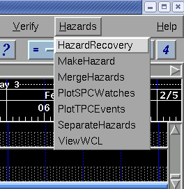
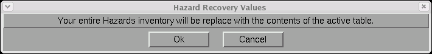

HazardRecovery
Procedure to re-initialize your Hazard grid based on current events
March 8, 20012
Hazard recovery should only be used in
case your entire hazard grid
is lost or mangled
by so many changes that you
cannot recover. Attempt to
restore from your official
database first, if it's
current.
The HazardRecovery procedure
will analyze the VTEC active table to
determine what hazards are in effect for your forecast area. It will
then convert
the hazards found in this table to gridded format in your hazard grid.
When
restored all hazards will be depicted by zone or county only.
To run the hazard recover procedure, select the Hazards menu,
the select HazardRecovery.

After selecting
HazardRecovery, a warning dialog will display.

Upon selecting Ok, your entire
Hazards grid will be deleted, and replaced with the current
hazards found in the active table.
How It Works
The Hazard Recovery tool calculates the current set of Hazards in
effect (i.e., issued). It uses the following algorithm:
- The VTEC active table is retrieved from EDEX.
- The table is filtered and actions that are CAN, UPG, and EXP are
removed.
- Records that represent current events are kept. Current
events are obtained from three different sources (within the VTEC
table):
- Convective Watches (TO.A, SV.A) from "my" site from "my" WCN
are considered the current issued convective watches. We ignore
the WOU and other information from SPC. Convective watches from
"my" site but from a different product are ignored.
- Any records from "my" site are considered, both tropical and
non-tropical.
- Tropical Cyclone Watches/Warnings (HU, TY, TR) from TPC (which
only contain coastal zones) are added.
The procedure then removes all Hazard grids, and then creates the
hazards based on the calculated active events and puts them into the
Hazards grid.
Note: The HazardRecovery tool only recovers events that are compatible
with the current GFE mode. If the GFE mode is operational, then
only
"X", "O", and "E" VTEC events will be considered. If the GFE mode
is "TEST", then only "T" VTEC events will be considered.
Note: HazardRecovery has been updated for the 2007 tropical season due
to changes in the TCV product. The TCV product will now
only contain coastal zones, thus the HazardRecovery procedure now looks
at tropical events issued by your site.